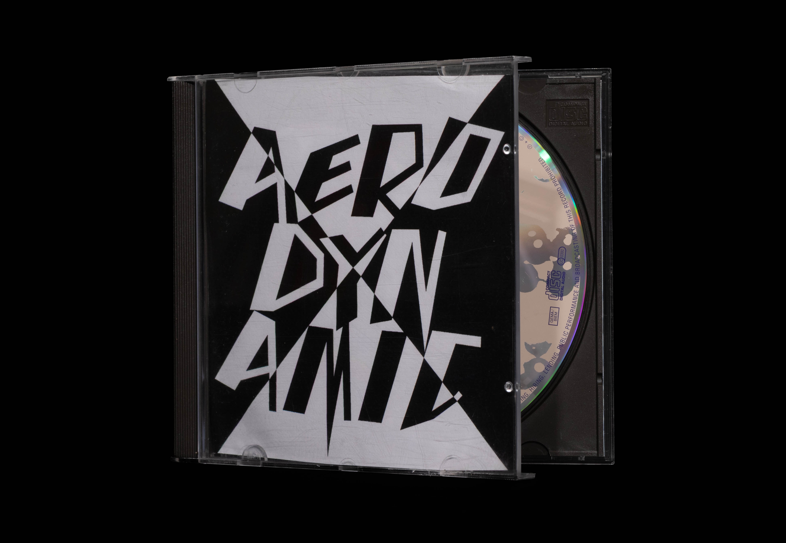
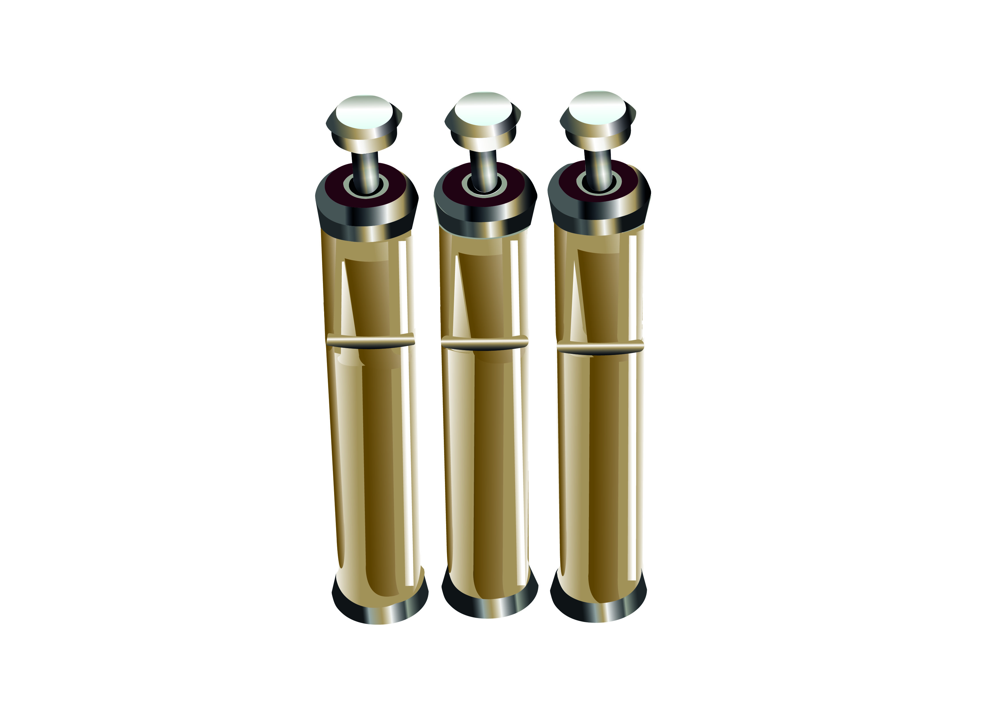
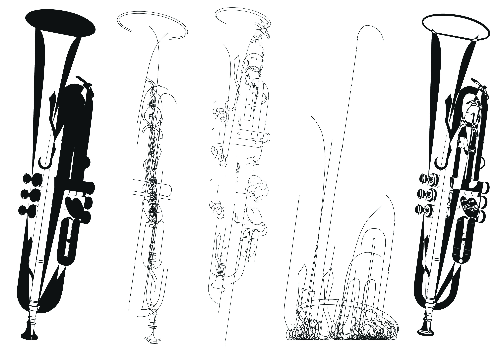
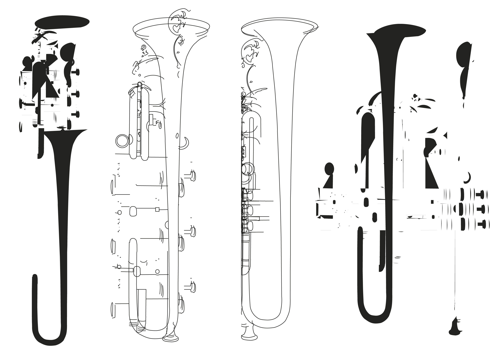
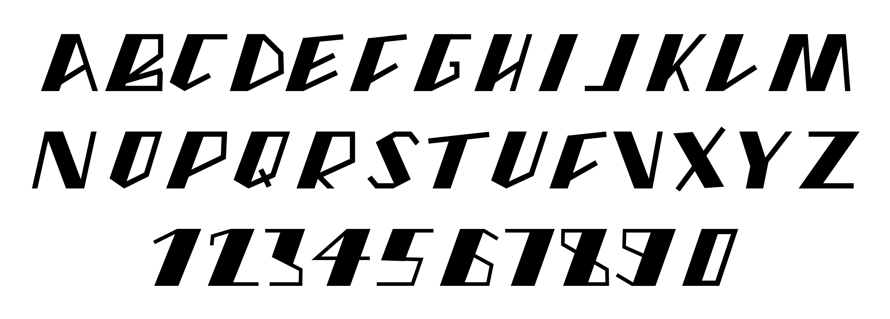

«Daft Punk»
Buchstaben stehen wie Figuren auf einer Bühne, jede Linie kantig, klar und doch voller Bewegung. Sie tragen den Puls von Daft Punk in sich, Rhythmus und Energie, die den Blick führen. Zwischen Spannung und Ruhe, entfaltet sich ein eigenes Taktgefühl, das den Blick lenkt und neugierig macht. Formen öffnen Räume, schaffen Muster aus Linie und Abstand, die beim genauen Hinsehen ihre ganze Wirkung entfalten und eine Atmosphäre erzeugen, die zugleich vertraut und überraschend ist.
- 2024 Font Design